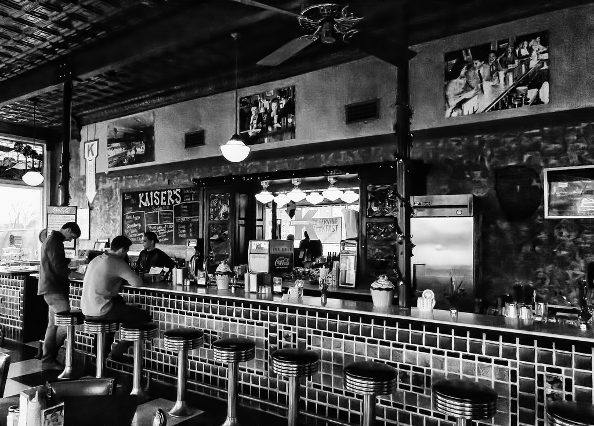

Todo empezó con un sueño…
Un día Albert citó a su amigo Javier para comentarle que quería abrir un restaurante, una de esas asignaturas
pendientes. Javier no dudó en contactar con su buen amigo Paco Pérez, Chef reconocido, cinco estrellas
Michelin.
Paco lo vio clarísimo desde el principio «Es una idea fantástica pero arriesgada, ¿os atrevéis?» Para hacer
hamburguesas gourmet
la cocina debe funcionar como un restaurante gourmet, con mucho personal de cocina cualificado
y bien organizado. para mantener el producto con la calidad y sabor que la elaboración de nuestros productos
requiere.
Condimentar cada una de ellas con diferentes ingredientes para crear recetas únicas y equilibradas con producto
local y ecológico siempre que sea posible para garantizar su frescura.
Evitamos el uso de prensadoras que el jugo elaborando las hamburguesas a mano, por lo que resultan esponjosas y
mucho más sabrosas. Ya en marcha el proyecto y a dos semana de empezar, Javier se despertó a medianoche con el
ingrediente
que hacía días buscaba, llamó a un viejo amigo, Rafa Barrera, el mejor Gin Tonic Master que conocía y le propuso
maridar las mejores hamburguesas con sus magníficos Gin & Tonic.

Porque nos interesas,
foto de nuestros inicios en el restaurante, porque no solo somos un reataurante, somos familia!